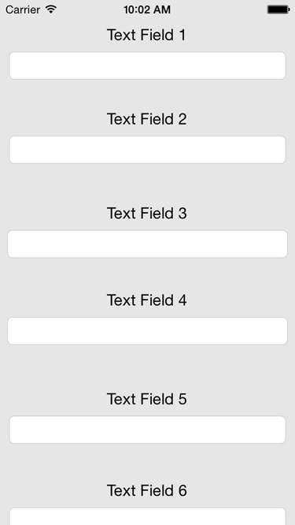
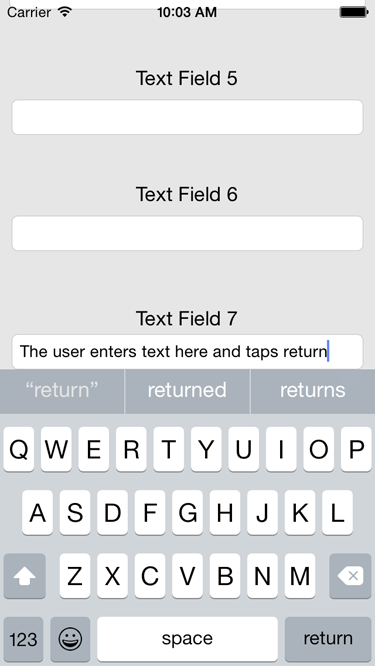
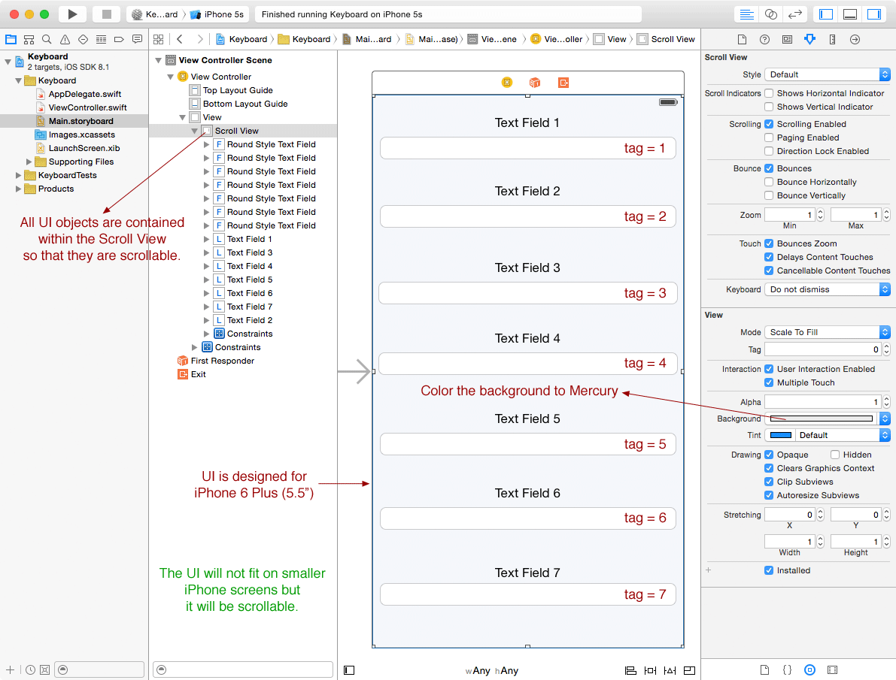
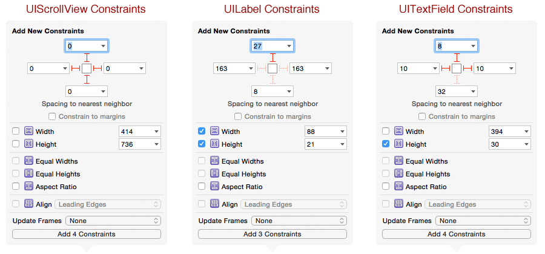

Learning Objectives
Table of Contents
Step 0: Earlier Phases of the Software Life Cycle
We assume that earlier phases of the Software Life Cycle have been completed. See Dr. Balci's Software Life Cycle. The life cycle processes Problem Formulation, Requirements Engineering, Architecting, and Design are assumed to be completed. In this tutorial, we focus on the Programming process.
Step 1: Application Functionality Specification
"When users touch a text field [UITextField], a text view [UITextView], or a field in a web view, the system displays a keyboard." [Apple, Managing the Keyboard] Sometimes, the keyboard can hide some of the text field and text view objects that are the focus of editing. In this case, you need to scroll the content up under the keyboard so that the text field or text view is shown above the keyboard for the user to enter or edit text.
Upon launch, this tutorial app lists 7 Text Field objects some of which are hidden on the bottom. The user can scroll the view content up to reveal the hidden text fields. Upon tapping inside Text Field 7, it is furthered scrolled up to open up space to display the keyboard as depicted in the following screenshot. After the keyboard is shown, the user can enter text in the current text field, and then tap inside another one and enter text into it, and then tap inside another one and enter text, and so on. This prevents the user from tapping Return after each text entry and removing and redisplaying the keyboard repeatedly. The view content is scrollable behind the keyboard while it is shown.
iPhone 5S View iPhone 5S View with Keyboard

show the keyboard and enable user to enter text.
Step 2: Creation of a New Project
- Launch Xcode. Create a new project by selecting File → New → Project...
- Select iOS → Application → Single View Application template. Click Next.
- In the Choose options for your new project dialog,
- Enter Product Name as Keyboard.
- Enter Your Name as Organization Name.
- Enter com.yourname as your company/organization unique identifier.
- The string com.yourname.Keyboard becomes the Bundle ID for your application uniquely identifying it in the App Store for distribution.
- Select Swift as the programming language to use.
- Select iPhone for the Devices, implying that your app will run on those iPhone and iPod Touch devices that can run iOS 8.0 or higher.
- Click Next. In the File Browser window displayed,
- Select a location on your hard disk to store your project.
- Uncheck Source Control to disable version control. Click Create to create your project.
General Project Settings
- Click the project name Keyboard in the project navigator to display the General project settings.
- Click the Team pop-up menu and select your iOS Developer Program account name from the list displayed. If you have not added your iOS Developer Program account, select Add an Account...
- Check only the Portrait device orientation. We will not support any other orientation.
Copying Files into Your Project
- Download the Keyboard_files.zip file.
- Uncompress it.
- Click Images.xcassets in the project navigator to display the Image Assets Pane.
- Drag and drop the following into the Image Assets Pane:
- App Icons
- Images
- Launch Image
Setting the App Icons
- Click AppIcon in the Image Assets Pane.
- Select iOS 8.0 and Later Sizes and iOS 7.0 and Later Sizes for iPhone under the Attributes Inspector.
- Click the Media Library icon in the Library Selector Bar to show all of the image assets for the project.
- Drag and drop an app icon to its corresponding placeholder in the AppIcon assets area.
Setting the Launch Image
- Click LaunchScreen.xib in the project navigator to display its content.
- Click the View (UIView) object to select it.
- Bring up the Attributes Inspector and select iPhone 5.5-inch from the Size pop-up menu.
- Select the title and copyright labels and press the Delete key to delete them.
- Show the Object Library. Drag an Image View (UIImageView) object from the Object Library and drop it on the canvas.
- Under the Size Inspector, make sure that it has: x=0, y=0, w=414, height=736
- Click the Image View object to select it.
- Under the Attributes Inspector:
- Select LaunchImage1080x1920 from the Image pull-down menu as the launch image to show.
- Apply Constraints:
- Click the Pin tool to show it and pin it to have 0 distance from each of the 4 edges of the device.
Step 3: User Interface Development
Create the user interface as shown in the following screenshot for iPhone 6 Plus, 5.5" screen size. Assign the tag numbers to the text fields as shown below.

Apply the required Auto Layout Constraints as depicted in the following screenshot so that the UI is scrollable for iPhone 4S, iPhone 5S, and iPhone 6.

Step 4: View Controller Class Development
Copy and paste the documented code given below. Carefully study the code, understand what it is doing, and learn from it!
ViewController.swift file:
//
// ViewController.swift
// Keyboard
//
// Created by Osman Balci on 10/29/14.
// Copyright (c) 2014 Osman Balci. All rights reserved.
//
/*
---------------------------------------------------------------------------------------
READ ME:
(1) You must apply all Auto Layout Constraints in order for this code to work.
(2) When you run under iPhone 4S or 5S, you will notice that the content is scrollable.
The entire content is too big to display in the smaller screens; however, the user
can scroll the content up and enter the data in the text fields that hidden before.
(3) Assign tag numbers to the text fields in the Storyboard so that you can process the
text entered by the user according to the corresponding text field.
---------------------------------------------------------------------------------------
*/
import UIKit
class ViewController: UIViewController, UIScrollViewDelegate, UITextFieldDelegate {
// Object reference to the UIScrollView object in the UI
@IBOutlet var scrollView: UIScrollView!
// Object reference pointing to the active UITextField object
var activeTextField: UITextField?
/*
-----------------------
MARK: - View Life Cycle
-----------------------
*/
override func viewDidLoad() {
super.viewDidLoad()
// Designate self as a subscriber to Keyboard Notifications
registerForKeyboardNotifications()
}
/*
---------------------------------------
MARK: - Handling Keyboard Notifications
---------------------------------------
*/
// This method is called in viewDidLoad() to register self for keyboard notifications
func registerForKeyboardNotifications() {
// "An NSNotificationCenter object (or simply, notification center) provides a
// mechanism for broadcasting information within a program." [Apple]
let notificationCenter = NSNotificationCenter.defaultCenter()
notificationCenter.addObserver(self,
selector: "keyboardWillShow:", // <-- Call this method upon Keyboard Will SHOW Notification
name: UIKeyboardWillShowNotification,
object: nil)
notificationCenter.addObserver(self,
selector: "keyboardWillHide:", // <-- Call this method upon Keyboard Will HIDE Notification
name: UIKeyboardWillHideNotification,
object: nil)
}
// This method is called upon Keyboard Will SHOW Notification
func keyboardWillShow(sender: NSNotification) {
// "userInfo, the user information dictionary stores any additional
// objects that objects receiving the notification might use." [Apple]
let info: NSDictionary = sender.userInfo!
/*
Key = UIKeyboardFrameBeginUserInfoKey
Value = an NSValue object containing a CGRect that identifies the start frame of the keyboard in screen coordinates.
*/
let value: NSValue = info.valueForKey(UIKeyboardFrameBeginUserInfoKey) as NSValue
// Obtain the size of the keyboard
let keyboardSize: CGSize = value.CGRectValue().size
// Create Edge Insets for the view.
let contentInsets: UIEdgeInsets = UIEdgeInsetsMake(0.0, 0.0, keyboardSize.height, 0.0)
// Set the distance that the content view is inset from the enclosing scroll view.
scrollView.contentInset = contentInsets
// Set the distance the scroll indicators are inset from the edge of the scroll view.
scrollView.scrollIndicatorInsets = contentInsets
//-----------------------------------------------------------------------------------
// If active text field is hidden by keyboard, scroll the content up so it is visible
//-----------------------------------------------------------------------------------
// Obtain the frame size of the View
var selfViewFrameSize: CGRect = self.view.frame
// Subtract the keyboard height from the self's view height
// and set it as the new height of the self's view
selfViewFrameSize.size.height -= keyboardSize.height
// Obtain the size of the active UITextField object
let activeTextFieldRect: CGRect? = activeTextField!.frame
// Obtain the active UITextField object's origin (x, y) coordinate
let activeTextFieldOrigin: CGPoint? = activeTextFieldRect?.origin
if (!CGRectContainsPoint(selfViewFrameSize, activeTextFieldOrigin!)) {
// If active UITextField object's origin is not contained within self's View Frame,
// then scroll the content up so that the active UITextField object is visible
scrollView.scrollRectToVisible(activeTextFieldRect!, animated:true)
}
}
// This method is called upon Keyboard Will HIDE Notification
func keyboardWillHide(sender: NSNotification) {
// Set contentInsets to top=0, left=0, bottom=0, and right=0
let contentInsets: UIEdgeInsets = UIEdgeInsetsZero
// Set scrollView's contentInsets to top=0, left=0, bottom=0, and right=0
scrollView.contentInset = contentInsets
// Set scrollView's scrollIndicatorInsets to top=0, left=0, bottom=0, and right=0
scrollView.scrollIndicatorInsets = contentInsets
}
/*
------------------------------------
MARK: - UITextField Delegate Methods
------------------------------------
*/
// Assign tag numbers to the text fields in the Storyboard.
// This method is called when the user taps inside a text field
func textFieldDidBeginEditing(textField: UITextField!) {
activeTextField = textField
println("Text Field \(textField.tag): Did Begin Editing")
}
/*
This method is called when the user:
(1) selects another UI object after editing in a text field
(2) taps Return on the keyboard
*/
func textFieldDidEndEditing(textField: UITextField!) {
activeTextField = nil
println("Text Field \(textField.tag): Did End Editing")
//******** Process the Text Entered by the User Here *************
// Print the text field number and the text entered in it.
println("Text Field \(textField.tag): \(textField.text)")
//****************************************************************
}
// This method is called when the user taps Return on the keyboard
func textFieldShouldReturn(textField: UITextField!) -> Bool {
// Deactivate the text field and remove the keyboard
textField.resignFirstResponder()
return true
}
/*
---------------------------------------------
MARK: - Register and Unregister Notifications
---------------------------------------------
*/
override func viewWillAppear(animated: Bool) {
super.viewWillAppear(animated)
self.registerForKeyboardNotifications()
}
override func viewDidDisappear(animated: Bool) {
super.viewWillDisappear(animated)
NSNotificationCenter.defaultCenter().removeObserver(self)
}
}
Build and run your app to test its functionality under the iOS Simulator for iPhone 4S, iPhone 5S, iPhone 6, and iPhone 6 Plus.
While running the app, watch the console for displayed println() outputs to learn how the keyboard notifications work.